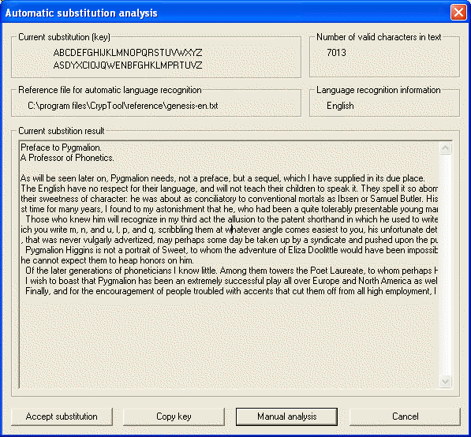

You can reach this dialog via the menu entry Analysis \ Symmetric Encryption (classic) \ Ciphertext only \ Substitution.
Introduction
Implementation
Automatic crypt analysis
Speech recognition
Usage
Known constraints
The method for automatic crypt analysis of monoalphabetic substitution ciphers implemented in CrypTool so far was based on the recognition of the most frequent words of a language and had the following constraints: No automatic speech recognition, the need for retaining whitespaces within the ciphertext and no distinction between upper and lower case.
The new implementation is based on "A Fast Method for the Cryptanalysis of Substitution Ciphers" (Cryptologia 19:3, 1995) by Thomas Jakobsen. Mainly this method was to introduce the following benefits:
The algorithm works on the Latin alphabet mit 26 characters (A to Z). Die alphabet can be extended with the whitespace character, so that whitespaces are encrypted just like other characters (each character is mapped on another character). Umlauts, punctuation marks and special characters as well as upper and lower case are retained during encryption.
Furthermore the new implementation was extended with an algorithm for automatic speech recognition. The implemented method is based on the "index of coincidence" (according to W. F. Friedman, 1922).
The implemented crypt analysis method determines the frequency distribution of the given text. The frequency distribution of single characters is used to compute the initial value of the key, whereas the frequency distribution of digrams is used to determine the quality of this key. The method is based on a fast algorithm, computing an initial value for the key at the beginning and then improving this key with each iteration.
The increased speed of this method is based on the following details: The initial value of the key is created with regard to the frequency distribution of single characters of the ciphertext. The method works with a distribution matrix for digrams and not directly with the ciphertext. During key search the frequency of single characters is taken into account.
The computation of the key "quality" is based on a comparison of the digram frequency distribution of the given ciphertext with the frequency distribution of the CrypTool reference text file, which can be found via the menu entry Options \ Text Options. The overall deviation is computed by summing up the deviation of all single digrams. The smaller this deviation is, the "better" is the computed key. In an ideal case there should be no deviation at all. But this is rarely seen in reality, since every text has its own digram frequency distribution differing from the reference distribution. So the strategy of this algorithm is the minimization of the given deviation.
According to the author, this method is significantly faster than other well known methods such as Carroll-Robbins and King-Bahler, and the algorithm is to succeed at a rate of 98% (with ciphertexts of 400 characters).
You can find further information about the implemented method in "A Fast Method for the Cryptanalysis of Substitution Ciphers" (Cryptologia 19:3, 1995) by Thomas Jakobsen.
It is easier to decide which language a ciphertext was written in than it is to decrypt this ciphertext without knowing the key. This has already been shown by W. F. Friedman in 1922. The language is determined using the index of coincidence, which is characteristic for a certain language. The index of coincidence is computed using the frequency of single characters in the ciphertext.
But even speech recognition does not always lead to accurate results. The reason for this is the statistical spread of character frequencies in different texts that significantly differ from reference texts of a certain language.
The automatic crypt analysis is started via the menu entry Analysis \ Symmetric Encryption (classic) \ Ciphertext only \ Substitution.
After that the user can choose between the old and the new algorithm:
By default the new algorithm (digram analysis) is selected. After choosing the algorithm, an options dialog is shown as follows:

Users can choose if whitespaces belong to the alphabet. Additionally the user can hide the graphical user interface during analysis in order to see the finals result only. The selection of this option leads to an increase of speed, because the text does not need to be decrypted and printed on the screen after each successful iteration.
The following warning appears if the text to be analyzed is too short (less than 200 characters of the alphabet):

The final result is shown in another window. If the graphical user interface was not deactivated earlier, the current computations are shown in the same window. The display is updated each time a "better" key was found, so the crypt analysis can be tracked in a very dynamic way.

If the substitution is accepted by the user, a new window is opened containing the decrypted text. The text can be saved by the user. Also the user can copy the current substitution key to the key store by clicking the button "Copy key". Furthermore the user can try to improve the result of the automatic analysis by clicking the button "Manual analysis".
The biggest constraint to the aforementioned methods is the length of the ciphertext at hand. Like with all other frequency based methods, the ciphertext has to be sufficient in size to allow the substitution analalysis at all. Thus the implemented methods are not suited for the crypt analysis of short ciphertexts. According to the author, best results are achieved when using ciphertexts of 300 to 400 characters or more (98% rate of success), whereas the rate of success for ciphertexts of 100 to 200 characters is between 50% and 80%.